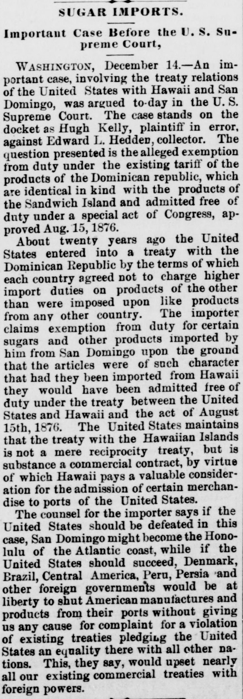
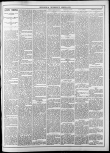

About twenty years ago the United States entered into a treatyHace unos veinte años, los Estados Unidos celebraron un tratado
Helena Weekly Herald. Helena, Mont., December 22, 1887. Page 3. View the originalVer el original


See the full pageVer la página completaAn importer claims exemption from United States duty on certain sugars and products from San Domingo based on a treaty with the Dominican Republic requiring import duties no higher than those charged on products from any other country, comparing it to the duty-free status granted under the treaty and act with Hawaii. The United States maintains that the Hawaiian treaty is a commercial contract involving valuable consideration rather than a mere reciprocity treaty. Counsel argues that a defeat for the U.S. could make San Domingo the "Honolulu of the Atlantic coast," while a U.S. victory could lead multiple foreign governments to shut out American manufactures without violating existing treaties of equality, thereby upsetting nearly all U.S. commercial treaties.Un importador demanda la franquicia de derechos en los Estados Unidos para determinados azúcares y frutos de Santo Domingo, invocando un tratado con la República Dominicana que veda aranceles más gravosos que los exigidos a cualquier otra potencia, equiparándolo al trato libre de derechos otorgado por el tratado y la ley relativos a Hawái. Los Estados Unidos sostienen que el instrumento hawaiano es un contrato mercantil que media una valiosa contraprestación y no un simple convenio de reciprocidad. La defensa arguye que una derrota para los EE. UU. podría tornar a Santo Domingo en el «Honolulú de la costa atlántica», al paso que una victoria estadounidense induciría a varios gobiernos extranjeros a cerrar sus puertas a las manufacturas estadounidenses sin vulnerar los tratados vigentes de igualdad, desarticulando la casi totalidad de los convenios comerciales norteamericanos.
FULL TEXT:TEXTO COMPLETO:
Involving Treaty Relations With Two Countries.Involucrando relaciones de tratado con dos países.
WASHINGTON, Dec. 14.—An important case, involving the treaty relations of the United States with Hawaii and San Domingo, was argued to-day in the United States supreme court. The case stands on the docket as No. 1,012, Hugh Kelly, plaintiff in error, against Edward L. Hedden, collector, in error to the United States circuit court for the southern district of New York. The question presented is the alleged exemption from duty, under the existing tariff, of products of the Dominican republic which are identical in kind with products of the Sandwich islands admitted free of duty under the special act of congress, approved Aug. 15, 1876. About twenty years ago the United States entered into a treaty with the Dominican republic by the terms of which each country agreed not to charge higher import duties on the products of the other than were imposed upon like products from any other country. The importers, who are the plaintiffs in error in this and another similar case, claim exemption from duty for certain sugars and other products imported by them from San Domingo, upon the ground that the articles were of such a character that had they been imported from Hawaii they would have been admitted free of duty under the treaty between the United States and Hawaii and the act of Aug. 15, 1876, enforcing that treaty. The importers assert that if their contention is not sustained, the Dominican republic will be released from its treaty obligations by virtue of the failure of the United States to keep its engagements, and that San Domingo may then practically exclude United States manufacturers from her ports by exemptions and discriminating duties in favor of the European countries, which are seeking the trade of the island.WASHINGTON, 14 de diciembre.—Un caso importante, que involucra las relaciones de tratado de los Estados Unidos con Hawái y Santo Domingo, fue argumentado hoy en la corte suprema de los Estados Unidos. El caso figura en el registro como No. 1,012, Hugh Kelly, demandante en error, contra Edward L. Hedden, recaudador, en error a la corte de circuito de los Estados Unidos para el distrito sur de Nueva York. La cuestión presentada es la alegada exención de derechos, bajo el arancel existente, de productos de la república dominicana que son idénticos en clase a productos de las islas Sandwich admitidos libres de derechos bajo la ley especial del congreso, aprobada el 15 de agosto de 1876. Hace unos veinte años los Estados Unidos entraron en un tratado con la república dominicana por cuyos términos cada país acordó no cobrar derechos de importación más altos sobre los productos del otro que los impuestos sobre productos similares de cualquier otro país. Los importadores, que son los demandantes en error en este y otro caso similar, reclaman exención de derechos para ciertos azúcares y otros productos importados por ellos desde Santo Domingo, bajo el fundamento de que los artículos eran de tal carácter que si hubieran sido importados desde Hawái habrían sido admitidos libres de derechos bajo el tratado entre los Estados Unidos y Hawái y la ley del 15 de agosto de 1876, que hace cumplir ese tratado. Los importadores afirman que si su contención no es sostenida, la república dominicana será liberada de sus obligaciones de tratado en virtud del fracaso de los Estados Unidos en cumplir sus compromisos, y que Santo Domingo puede entonces excluir prácticamente a los fabricantes de los Estados Unidos de sus puertos mediante exenciones y derechos discriminatorios en favor de los países europeos, que están buscando el comercio de la isla.